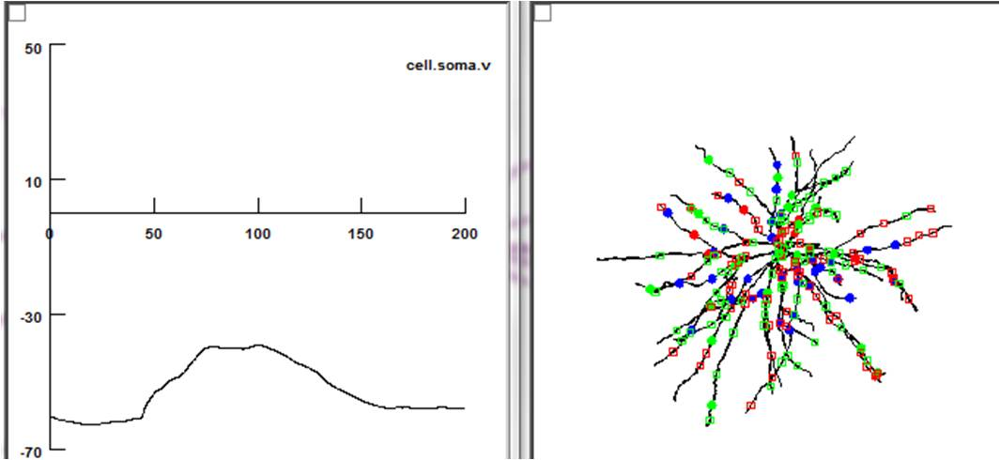

This is the model associated with the paper Lavzin M, Rapoport S, Polsky A, Garion L, Schiller J (2012) Nonlinear dendritic processing determines angular tuning of barrel cortex neurons in vivo. Nature 490:397-401 This model was contributed by Alon Polsky. The code is written in NEURON which is available for free from http://www.neuron.yale.edu Usage: Auto-launch from ModelDB or compile the mod files with mknrndll (mac, mswin) or nrnivmodl (linux/unix). Start the program by double clicking mosinit.hoc (mswin), drag and dropping mosinit.hoc onto the nrngui icon (mac) or typing "nrngui mosinit.hoc" (linux/unix). Here is a short description of the panels: PARAMS Axon,soma,dends - Conductance of sodium and potassium voltage gated channels in the axon, the soma and the dendritic tree can be adjusted using the corresponding panels. L type calcium conductance was distributed homogeneously and can be controlled with the CaL value. Iterations -- parameters that determine synaptic distribution: Downlimit,UPlimit and Countlimit are used in iterations in which the number of synapses is changed from Downlimit to Uplimit in Countlimit steps. TC Ratio -- multiplier of the number of thalamocortical synapses. (1-number matches the current iteration number, 0 -- no TC synapses) CC Ratio, Inhib Ratio -- same as TC Ratio for excitatory and inhibitory cortico-cortical connections Calc -- clicking on the button runs the simulation New Loc- redistribution of the synapses, randomly over the whole dendtiric tree SYNAPSES Delay -- start of synaptic activation Amp -- mean conductance of a single synapse, in nS. Individual synaptic conductances are picked from a lognormal distribution with standard deviation of Amp. Tspike -- Interval between presynaptic pulses (ms) Nspike -- number of presynaptic pulses Nnoise -- presynaptic randomness -- 0 for precise timing, 1 for random activation Syn # number of synapses (adjusted automatically for each iteration when calc button is pressed). Random synapses are constantly active and provide the background, non specific to thalamic, activation. This code was used to generate figures S8, S9 and S13 in the supplementary information. Example of activation of the model cell by 40 ThalamoCortical (TC), 12 excitatory CorticoCortical (eCC) and 20 inhibitory CorticoCortical (iCC) synapses that were randomly distributed across the dendrites.  Figure 1: Left - somatic voltage. Right - synaptic location. Blue circles - TC, Red circles - eCC and Green circles -iCC. Squares - background 'noise' synapses. Figure 2: Peak cai (internal calcium) profile across the cell. Some dendrites exhibit 'hot spots' of high calcium entry Figure 3: Peak Vm is more homogeneous than the calcium signal. Sodium channel conductance was set to zero to prevent bAPs.